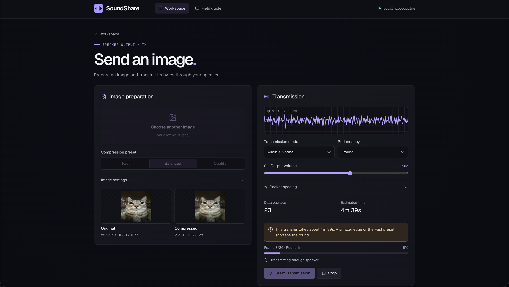

SoundShare
Images, carried by sound.
SoundShare started with a question: could you send a picture from one laptop to another using only the speaker and microphone? The sender compresses an image and plays its bytes as audible tones. On the receiving laptop, a preview fills in as each packet arrives. The website delivers the app; the image itself travels through the air.
Browser application
The challenge.
Move an image between two laptops through ordinary speakers and microphones, while making a slow, imperfect audio transmission understandable as it happens.
02 / THE RESPONSEInside the build.
Canvas resizes the image and compresses it to WebP, with a JPEG fallback. Numbered binary packets carry the compressed bytes, CRC-32 validation and a small strip of preview pixels. Web Audio and AudioWorklet connect speaker playback and microphone decoding to the ggwave WebAssembly modem, behind a React and TypeScript interface built with Vite and Tailwind CSS.
When the room gets noisy.
If noise in the room causes one packet to be missed, its part of the preview stays blank. Repeating the transmission fills the gap: the receiver remembers the packets it already has. Once every packet arrives, it checks the reconstructed file against a SHA-256 hash and unlocks the full image for download.
Resize & compress
Encode & play tones
Decode & reconstruct
- Progressive preview pixels travel with each data packet
- Numbered packets and CRC-32 checks support recovery across repeated transmissions
- Optional gapless playback schedules consecutive audio frames back-to-back
- SHA-256 verification gates the reconstructed image download
- Verified with 17 automated tests and an offline two-browser test that recovered the transmitted image bytes exactly